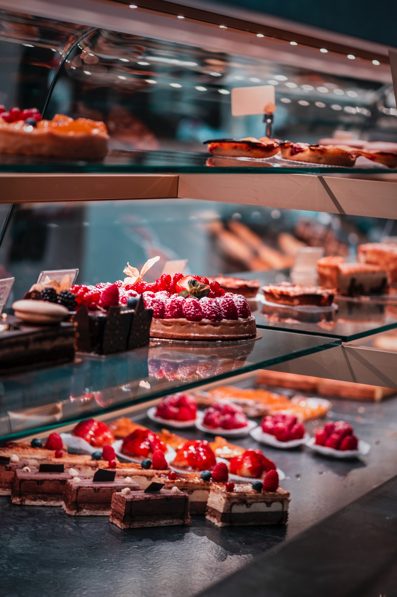
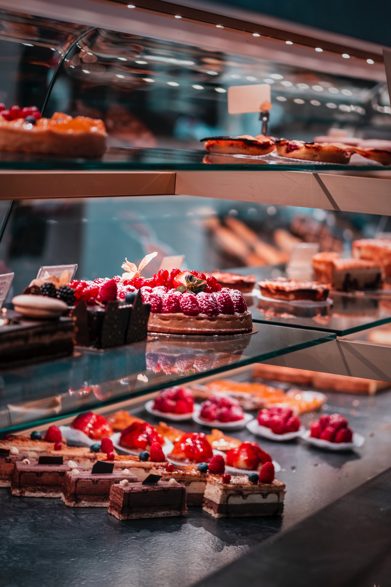

O PÃO MAIS CROCANTE E MACIO DE TODA SÃO PAULO
Venha conferir os melhores assados e confeitos da cidade em qualquer dia da semana
Nos visite
O PÃO MAIS CROCANTE E MACIO DE TODA SÃO PAULO
Venha conferir os melhores assados e confeitos da cidade em qualquer dia da semana
Nos visiteMassas feitas aqui sempre com os ingredientes de maior qualidade, assim deixando o pão sempre crocante, macio e fresco acima de tudo.
Temos uma grande variedade desde pães, biscoitos e bolos, até chocolates, geleias e licores.
 



São Bento ao escrever a Regra para os seus monges no século VI, os adverte que o mosteiro deva ser construído de tal forma que possua padaria, horta, queijaria, pomar, oficina para atender as necessidades da comunidade. Para o patriarca beneditino a vida do monge é o ora et labora, oração e trabalho, pois a ociosidade é inimiga da alma; por isso em certas horas devem ocupar-se os monges com o trabalho manual, e em outras horas com a leitura espiritual.
O Mosteiro de São Paulo não foge à regra. Em 1999 passou a oferecer ao público bolos, pães, geléias, biscoitos, cujas receitas são seculares, e estavam guardadas no arquivo da abadia. A forma de prepará-los só é transmitido a um outro monge para que se continue cumprindo o que escreveu S. Bento: "são verdadeiros monges, se vivem do trabalho de suas mãos".